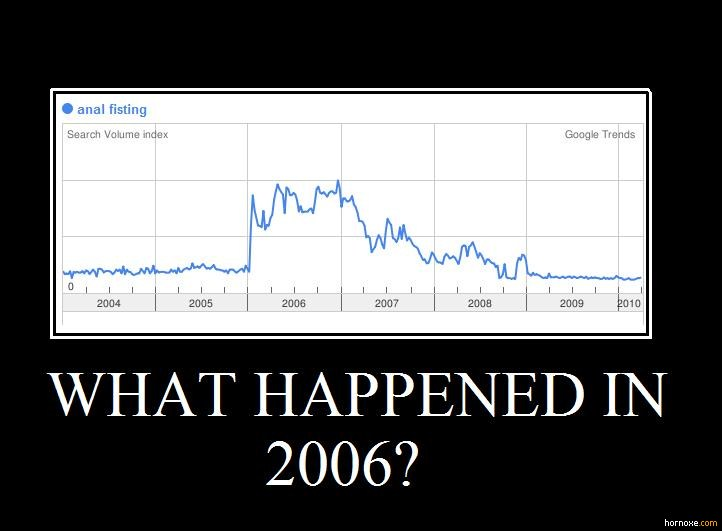

Bon sam est pas là alors je fais le con :)
Lançons un débat hautement philosophique sur cette mystèrieuse année 2006 qui restera je n’en doute pas dans les annales…

J’attends vos explications. N’ayez pas honte je suis un ancien pianiste.
PS: Moi je pense que ça a à voir avec le film Bareback Mountain sorti fin 2005. c’est une théorie…

Le trafic de cocaïne a explose, les policiers ont donc du agir en conséquence. D’ailleurs, l’abus de poudre chez les traders a abouti a la crise de 2008.
Mr Max, pouvez vous nous dire ou vous étiez le 1er Janvier 2006 ?
subprimes …
Les français devaient s’habituer a la douleur anale d’une manière ou d’une autre puisque vous-savez-qui allait être élu président l’année suivante.
D’après ce que j’ai pu voir, ça vient essentiellement des USA, Californie, Los Angeles. Mais l’intérêt est plus général que le fisting: “anal sex” ou “mature anal” par exemple bougent de la même manière.
Parfois il y a des phénomènes d’accélération, genre avalanche. C’est peut-être “Bareback Mountain” qui a été la petite pierre qui a entraîné le reste, possible.
Peut-être une prise de conscience des gens : ils vivent dans une société de sodomites.
En tout cas l’accélération se fait précisément à partir du 17 janvier pour tous ces termes. Si on regarde les termes en relation en mode “évolution”, les premiers crèvent tous le plafond.
La page wikipedia de janvier 2006 n’apporte pas grand chose.
Je ne sais pas s’il y a rapport de cause a effet mais.. Rappelons-nous : 01-04-2006 -> “Le pays pourrait connaître l’une des plus fortes épidémies enregistrées au cours des dernières quinze années, selon l’Inserm.”
Nous ne le dirons jamais assez : lavez vous les mains au moins 3 fois par jour.. ;)
2006 : Première Quenelle de 100 !
Le film “Borrat” et la fameuse scène du poing en plastic ;-)
Ca correspond à l’ouverture de la Fistinière ;)
Edikaphile ?
C’est probablement les prémices de la crise financière de 2007. ..Une mise en(tre) jambe
En 2006,le 12 Aout, j’ai retrouvé une souris morte dans ma baignoire. C’était mauvais signe….
Le reste allait suivre…
C’est dans le wiki
15 janvier 2006 : la sonde spatiale Stardust revient sur Terre.
On l’a cherché dans les moindres recoins jusqu’en en 2008 ou on l’a eu réellement dans
avec la crise.
Je vois pas autre chose
Mes débuts en thailande votre horreur
J’ai toute la collec :) mon ttitre d’album préféré étant “homo sapiens cornadus”
En 2006, j’ai découvert Python et lu le Swinnen…
Je ne regarde pas ça mais c’est très bizarre, j’ai le souvenir enfoui d’avoir entendu Jean-Marie Bigard parler de fisting sur scène, à peu près dans ces eaux là.
Mais ça ne peut pas être suffisant pour ce volume… Donc le mystère reste entier.
Peut-être parce que 2006, l’année du fist ?
désolé…
Ca se voit quand Sam n’est pas là …
Quoi ? Le niveau s’élève ? :)
Tu m’ôtes les mots de la bouche !
C’est l’année des décès :
– 14 mai : Fin de Malcolm, après 7 saisons, et 150 épisodes…
– 15 juin : Décès de Raymond Devos,
– 23 novembre : Décès de l’acteur Philippe Noiret, à l’age de 77 ans,
– 25 décembre : Décès de James Brown à l’âge de 73 ans.
– 27 décembre : Décès du célèbre parolier Pierre Delanoe.
– 30 décembre : Saddam Hussein, ex-dictateur, est pendu pour crime contre l’humanité
C’est aussi le coup de tête de Zidane.
Sinon, l’Europe est passée à deux doigts de la catastrophe nucléaire le 25 juillet 2006 à cause d’un court-circuit qui a provoqué le black-out d’un réacteur à Forsmark en Suède.
Hé hé Max, ton article est bien parti pour le top-ten.
ouais ça manque d’idées quand même, je pensais qu’on aurait des vrais inspecteurs gadget :)
Mon bon Max,
Adepte de votre site, mais inspecteur amateur en la matière, je me permet de vous signaler qu’il ne s’agit là que d’un complot international de plus visant à troubler les esprit chafouins et les éloigner des questions existentielles telles que la grève des marmottes Milka de cet hiver là (pour lutter contre les conditions de travail), ou peut être une corrélation loijntaine avec la sortie du Secret de Brokeback “chevauchons ensemble” Mountain… ou sinon :
http://www.abstrait-concret.com/2008/04/28/google-trends-what-the-fuck-tentative-dexplication/
Mais comme d’habitude, article fabuleux… J’ADORE (l’article, pas le FF)
Je tiens à préciser que je soutiens Max à 100% dans la publication de cet article à haute valeur ajoutée pour le blog. On a ouvert sametmax pour ça aussi :-)
la Grèce n’en finit plus de fêter sa victoire sur les USA en demi-finale de la coupe du monde de Basket. Je ne vois pas d’autre explication.